25 moments · 10 decades · one element
100 years of fashion · 25 moments · scroll to explore
Poiret borrowed from Ottoman dress to clothe Parisian women in harem pants. Scandalous, orientalist, and liberating all at once. Fashion as cultural appropriation before anyone had a word for it.
In the early 1920s, sections of a printed page were separated by column rules, ornamental flourishes, and deliberate white space. A section was a physical boundary drawn in ink. Editorial designers at magazines like Vogue were beginning to treat the section as a compositional unit, not just a divider. Where a section broke determined what felt important.
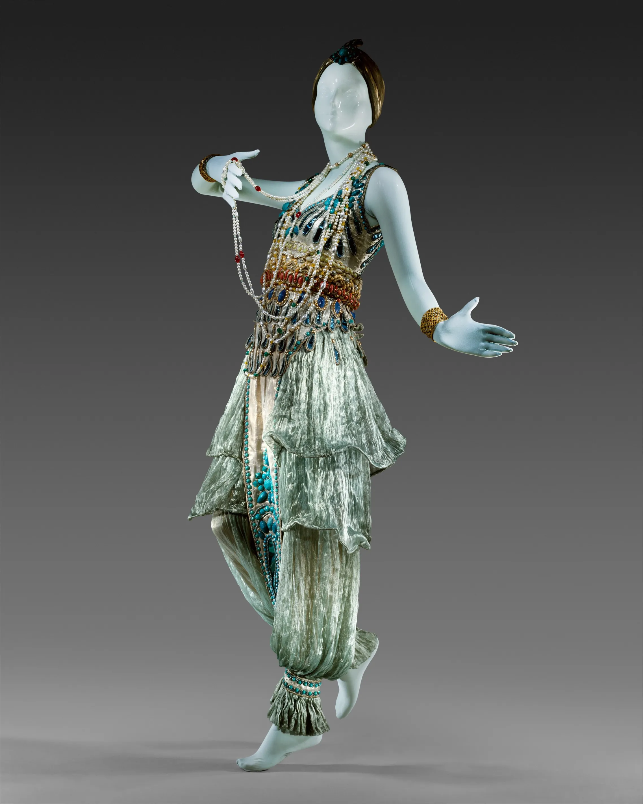
Vionnet cut fabric at 45 degrees and made cloth move with the body for the first time. A structural revolution disguised as a dress. Every seam was a decision.
Vionnet's contemporaries at print journals were experimenting with diagonal compositions that echoed what she was doing with fabric. The section in avant-garde typography of the 1920s was sometimes cut at an angle, text blocks arranged to create movement across the page. El Lissitzky and the constructivists were treating the section as a dynamic force rather than a passive container.
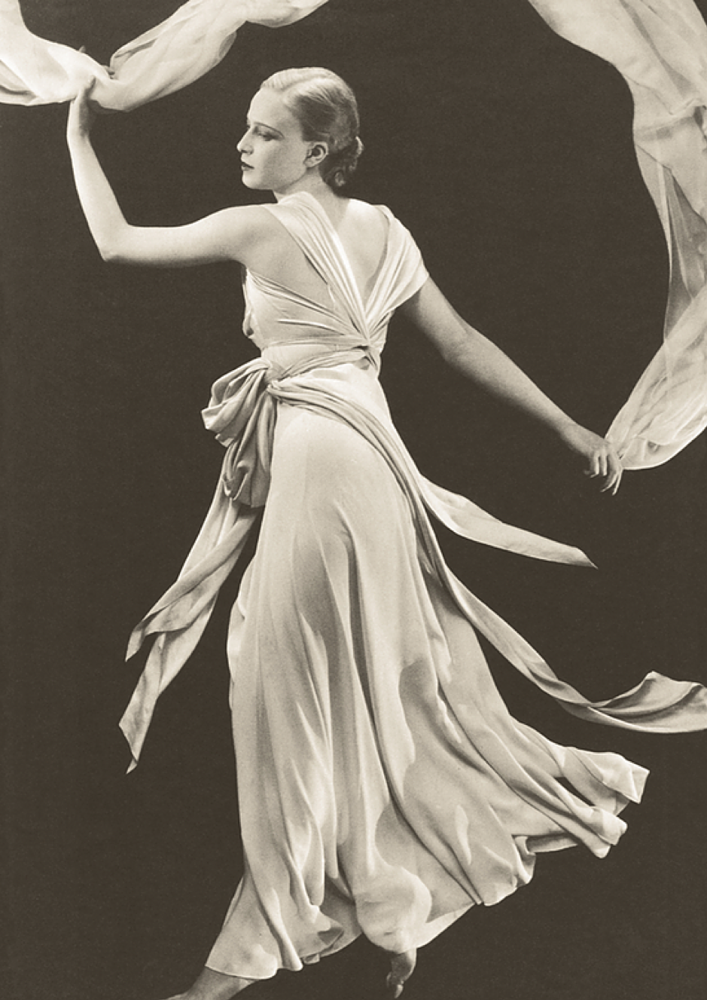
Weimar Berlin had no money, no stability, and complete creative freedom. The cabarets were full of people dressing however they wanted. Nobody had language for it yet.
Weimar print culture was producing some of the most formally unstable layouts in publishing history. Satirical magazines like Simplicissimus broke sections deliberately, overlapping text blocks and images in ways that felt violent. A section could be interrupted mid-thought. The layout itself carried the anxiety of the period. Structure was being used to show that structure was failing.
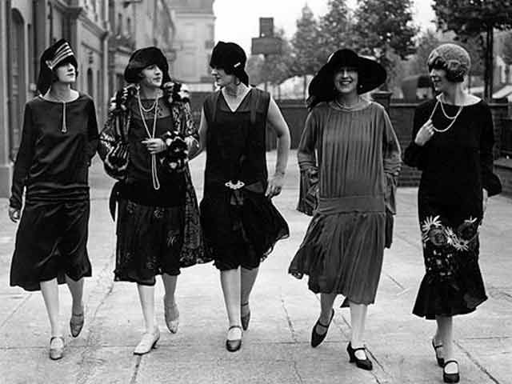
Chanel published a simple black dress in Vogue in 1926. Before this, black was for mourning. After, it was for everything. Restraint became the ultimate luxury.
By the late 1920s, the Bauhaus school had codified the section into a rational unit of grid-based design. Herbert Bayer and Laszlo Moholy-Nagy were arguing that a page should be organized by invisible mathematical columns. The section was a cell in a system. Decoration was removed. What remained was proportion, alignment, and the deliberate use of empty space as a section of its own.
Adrian padded Crawford's shoulders to balance her wide hips and Hollywood became the new Paris. Department stores sold what was on screen that same week.
Hollywood title cards and film posters of the 1930s treated sections as theatrical backdrops. A poster was divided into a star zone, a title zone, and a billing block, each a section with its own visual register. The hierarchy was absolute and instantly readable from across a lobby. Graphic designers working in the film industry were developing a section logic based entirely on attention and distance.
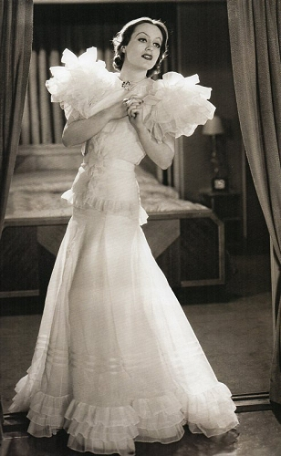
The CC41 Utility scheme set rules for fabric use, seam count, lapel width, and button number. For the first time, fashion became a matter of national policy.
Wartime information design reduced the section to its minimum functional form. British government pamphlets used numbered sections with heavy rules and no decorative elements. Every section had a purpose and nothing else. The Ministry of Information employed designers to make rationing instructions, evacuation procedures, and blackout guidance readable under stress. The section became a tool of survival communication.
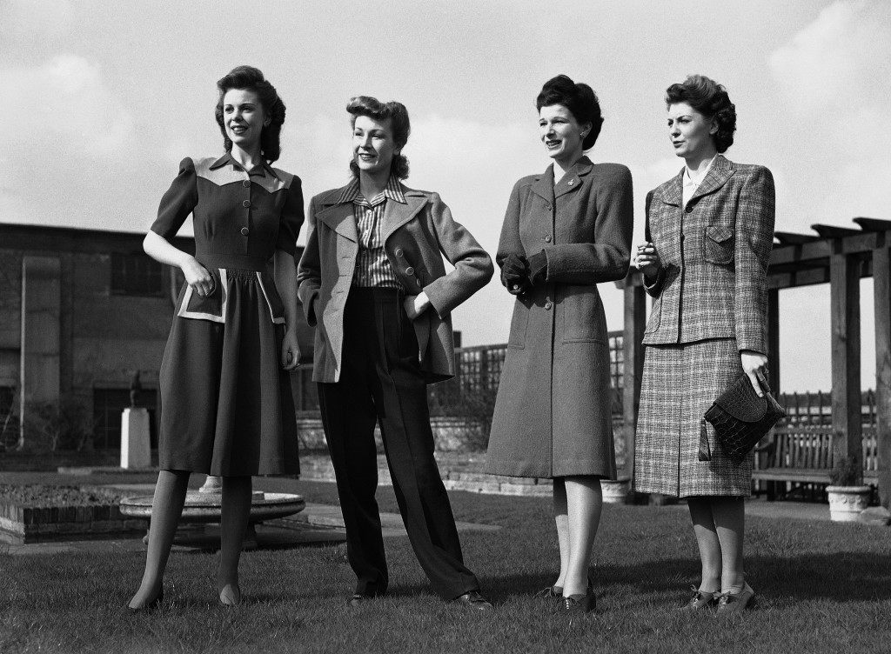
In 1947, Dior unveiled full skirts and cinched waists. Some women loved it. Some threw things at the models in the street. Nobody was neutral.
Post-war magazine publishing expanded its sections as an act of optimism. Vogue and Harper's Bazaar reintroduced full-page photographic sections that had been compressed during wartime paper shortages. A section could now breathe again. Alexey Brodovitch at Harper's Bazaar was orchestrating section breaks like a film editor, using white space and scale changes to create rhythm across a spread.
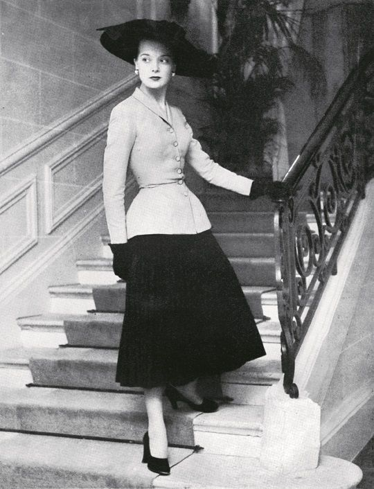
When DuPont released nylon stockings after WWII, women lined up for miles. In Pittsburgh, 40,000 women queued overnight for 13,000 pairs. One product. Total frenzy.
American newspaper design in the mid-1940s was being transformed by wire photography. A news section now had to accommodate images arriving at unpredictable sizes from across the world. Editors developed flexible section templates that could reflow around photographs. The section was becoming adaptive for the first time, a container that had to accommodate content it had not anticipated.
Claire McCardell designed for women who moved. She ignored Paris completely and looked at American women's actual lives instead. Practical was radical.
Claire McCardell's pragmatism had a print equivalent in mid-century American editorial design. Magazine sections began to separate functionally rather than decoratively. A fashion section, a beauty section, a features section each had their own visual grammar. The section was earning its place by doing a job, not by looking refined. Function before ornament applied to layout as much as to clothing.
Italian cinema gave the world a new way to dress. Relaxed, sun-drenched, confidently sensual. The beginning of Italian style as a global aspiration rather than a local fact.
Italian graphic design in the 1950s, through studios like Boggeri and designers like Max Huber, brought a new warmth to the section. Swiss grid logic was adopted but loosened. Sections overlapped slightly, colors bled across boundaries, photography broke the column edge. The Italian version of the section was rigorous but not cold. It had been given permission to be pleasurable.
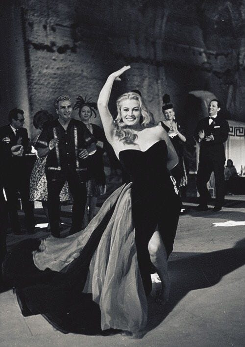
Before James Dean, jeans were workwear. After Rebel Without a Cause they became the uniform of anyone who refused to grow up. Fabric as generation.
Teen magazines emerged as a distinct publishing category in the early 1950s and invented their own section logic. Sections were short, punchy, and full of white space. The feature section of a teen magazine was nothing like the feature section of a women's magazine. Young readers were being credited with different reading habits. The section adapted to its audience for the first time in a deliberate, market-driven way.
Dior wanted curves. Balenciaga wanted geometry. Their decade-long rivalry was fashion's first great intellectual debate. Was the body the canvas, or the obstacle?
Swiss International Style reached its peak influence in the 1950s and the section became almost theological. Karl Gerstner and Armin Hofmann were writing about grid systems as if mathematical section division were a moral position. A correctly sectioned page was an ethical page. The debate between strict grid adherents and more expressive designers mirrored the Dior and Balenciaga argument almost exactly. One camp defined the space. The other freed it.
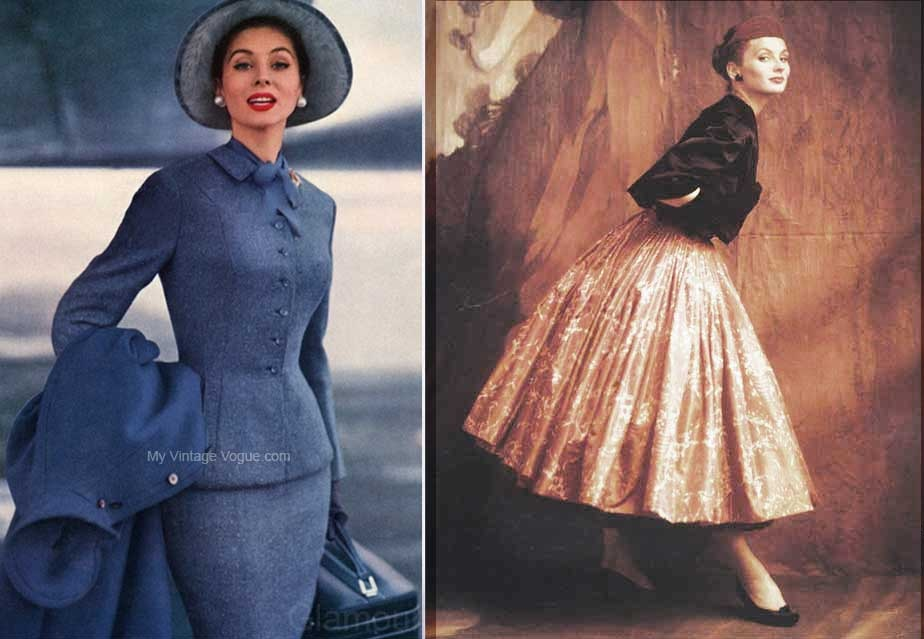
Mary Quant kept shortening the hemline because her customers kept asking her to. By the time it became international news she had been selling it for years.
1960s psychedelic and pop graphic design attacked the section with the same energy Quant attacked the hemline. Sections dissolved into continuous fields of pattern and color. Peter Blake and Wes Wilson were making posters where the section boundary had been replaced by vibration. Reading became optional. The eye moved across the surface without hierarchy or entry point. The section as organizing principle was temporarily suspended.
In 1966, YSL took a man's tuxedo, cut it for a woman, and showed it. Women who wore it to restaurants were sometimes refused entry. Fashion as confrontation.
Typographers working in the 1960s counterculture began to question who sections were for. Underground newspapers like the International Times and the East Village Other deliberately mixed section conventions, running text sideways, starting articles mid-page, ending them nowhere in particular. The section had been a gentlemen's agreement between editor and reader. Breaking it was a political act.
Studio 54 was fashion as theater. Halston, Bianca Jagger, Liza Minnelli — getting dressed was performance and the velvet rope was the only critic that mattered.
Disco-era magazine design at publications like Interview and Andy Warhol's various print projects treated sections as interchangeable. The section had no fixed identity. An interview might begin in what looked like an advertisement section. A product page might read like editorial. The boundaries were being blurred deliberately, mirroring the social blurring happening on the dancefloor. The section became ambiguous as a style choice.
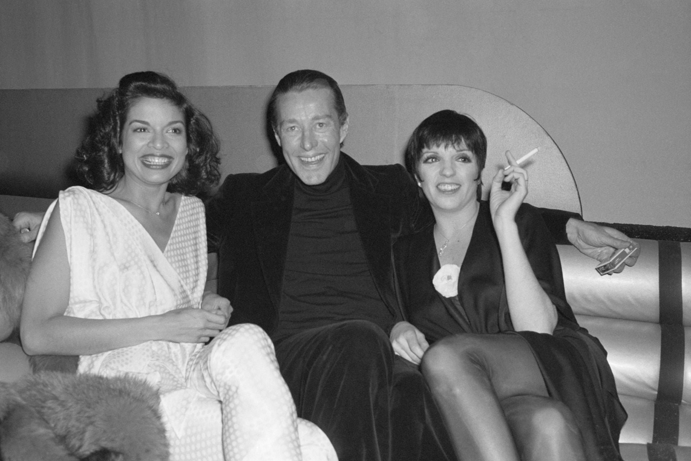
From her SEX shop on King's Road, Vivienne Westwood safety-pinned, ripped, and provoked her way into the canon. Punk was the only movement that genuinely wanted to destroy fashion.
Punk fanzines like Sniffin' Glue had no section logic at all. They were cut-and-paste productions made with scissors, photocopiers, and whatever typefaces could be stolen from newspapers. Sections appeared where content happened to land. The accidental section, the section that was just whatever fit on the page, became its own aesthetic. It looked wrong because the tools that made it right were being rejected on principle.
From his Harlem atelier, Dapper Dan bootlegged luxury logos for hip-hop royalty. The fashion houses sued him, then spent decades trying to replicate what he had already done.
Desktop publishing changed who could define a section. Before PageMaker in 1985, section design required professional typesetting equipment costing tens of thousands of dollars. After it, anyone with a Macintosh could produce a multi-section document. Community newspapers, church bulletins, and independent zines began developing their own section grammars without reference to professional design standards. The section had been democratized.
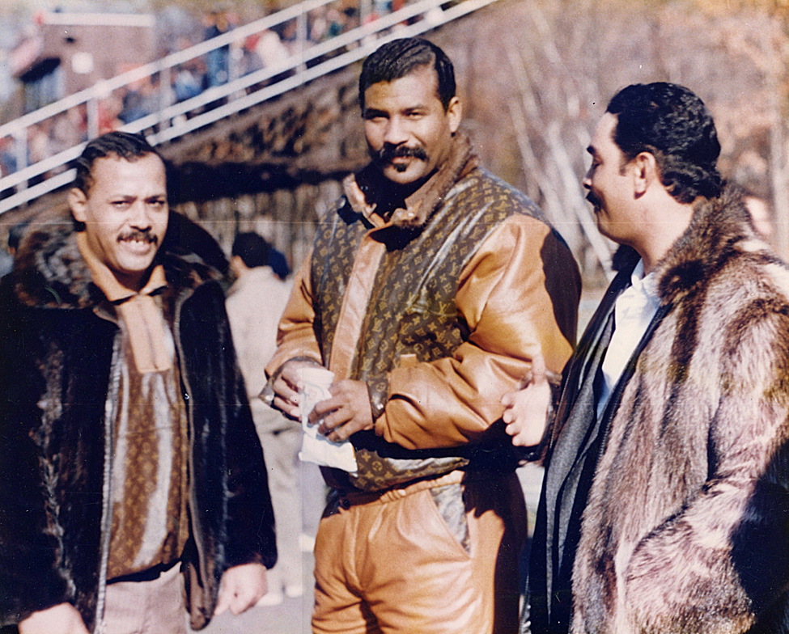
Armani removed the padding, canvas, and lining from the suit. He dressed Richard Gere in American Gigolo and changed what men thought power looked like.
Armani's restraint had a direct parallel in the corporate communications design of the early 1980s. Annual reports and brand guidelines began using wide margins, generous leading, and clearly defined sections with plenty of breathing room. The overdesigned section of the 1970s gave way to something quieter. Pentagram and other major design firms were developing section systems that were invisible when they worked correctly.
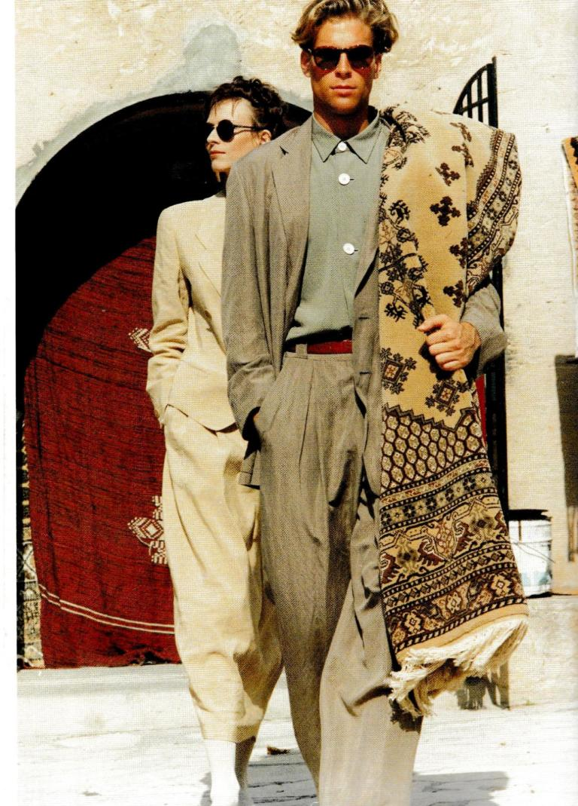
Marc Jacobs sent flannel shirts and Doc Martens down the Perry Ellis runway in 1993. The board fired him the next day. The collection is now in the permanent collection of the Met.
Early web pages in 1993 had no section element. The first HTML specification included headings, paragraphs, and lists but no structural container beyond the body tag itself. Mosaic browser users were reading pages that were essentially one undivided column of content. The section did not exist on the web yet. Developers were beginning to understand they needed one and had no official way to make it.
Calvin Klein's ads made pallor and thinness aspirational. The dishevelled look required specific bodies and intensive retouching. The naturalness was entirely manufactured.
By the mid-1990s, web developers had discovered the table tag and were using it to create grid-like sections on web pages. A section was now a table cell with a specific pixel width. It was invisible to the reader and structurally meaningless to the browser but it worked. Entire websites were built inside a single table with hundreds of nested cells. The section existed as a visual trick and nothing more.
McQueen's 1995 collection was violent, beautiful, and politically charged. He forced fashion to confront what it usually ignored. The show ran 14 minutes. It lasted decades.
Web designers in 1995 were importing print section logic onto screens without questioning whether it translated. Navigation sections, content sections, footer sections all aped magazine layout conventions. But screens were not pages. They scrolled. The section that worked in print, bounded and complete, became unstable online. A section could extend past the bottom of the screen and the reader might never find the end of it.
Shoichi Aoki photographed teenagers in Harajuku whose style had no Western reference point. The global industry spent twenty years catching up to what they did on a Tuesday.
CSS gave developers real control over sections for the first time in the late 1990s but browsers implemented it inconsistently. A section styled in Netscape looked different in Internet Explorer. Designers spent enormous effort making sections that simply looked the same across browsers. The section had become a compatibility problem. Its appearance was a negotiation between the designer's intention and what each browser would allow.
Galliano at Dior turned the monogram into spectacle. Every bag screamed its own name. Luxury became loud, then louder, then ubiquitous. The logo was the garment.
Web 2.0 design turned the section into a glossy container. Rounded corners, drop shadows, and gradient-filled section headers became standard across every major website. A section was recognizable as a section because it looked like a lifted card on a lighter background. Depth was simulated. Every section implied a surface it was resting on. The visual language was consistent to the point of sameness across the entire web.
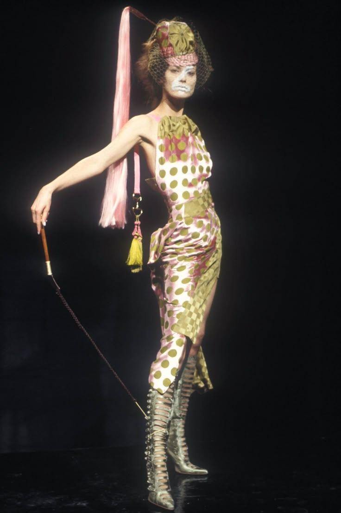
Abloh put quotation marks around everything. Off-White made streetwear self-aware. The boundary between streetwear and luxury was revealed to be a decision, not a fact.
HTML5's semantic section element arrived in browsers around 2012 and designers began, slowly, to use it correctly. A section now had implicit meaning. It was a thematically grouped block of content, distinct from an article, a header, or a nav. Screen readers could announce it. Search engines could weight it. The section had gone from being a visual unit to being a meaningful one. Most developers were still using divs anyway.
At Coperni's show, technicians sprayed Bella Hadid with Fabrican. It dried into a dress in ten minutes. The dress existed for a few hours. Fashion had become content.
By 2022, the section element was structurally correct but experientially irrelevant. Single-page applications built in React or Next.js assembled sections dynamically from component trees that bore no relation to the HTML output. A section might be generated, hydrated, streamed, or cached independently of everything around it. Users scrolled through infinite feeds with no sections at all. The section was defined in the spec and dissolved in practice at the same time.
<section> became a semantic HTML element in HTML5. Unlike a purely visual container, it represents a thematically grouped part of a document. It gives structure, meaning, and navigational clarity to content.
25 <section> elements, each tied to one fashion moment. Instead of styling interface buttons through time, this timeline treats structure itself as the element — showing how sections shape reading, hierarchy, and narrative flow.
Fashion history is geography. The capital of style never stayed in one place — it migrated from Paris to London to New York to Tokyo to Seoul to everywhere and nowhere at once.
Scroll the century. Find the moment. The section is both subject and interface.